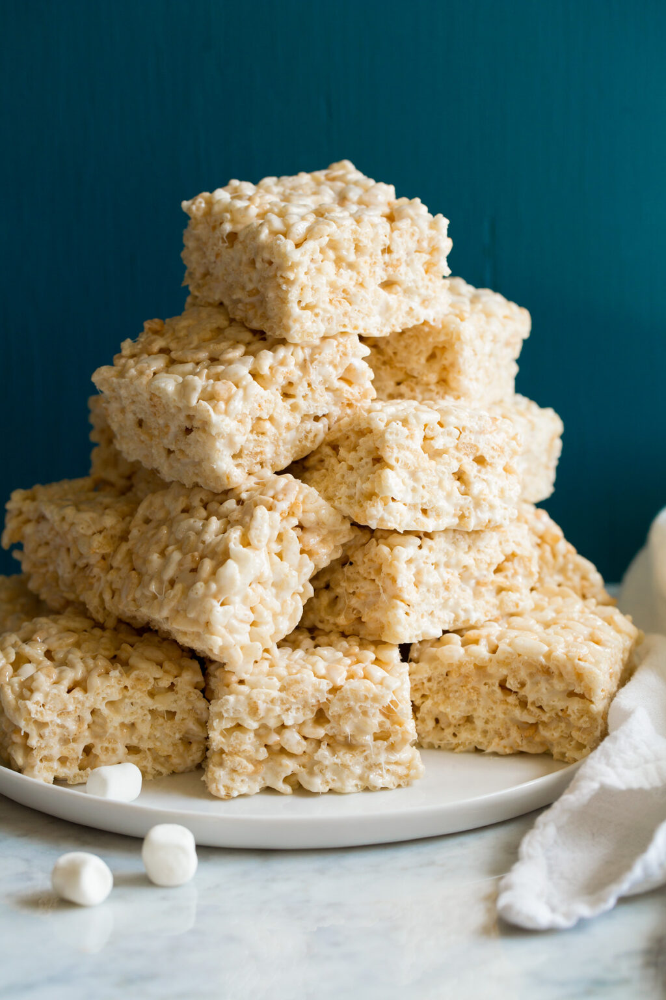

Rice Krispie Treats

Description
Light, cripsy, melt-in-your-mouth, soft and chewy rice krispie treats
Ingredients
- Mini Marshmallows
- Butter
- Rice Krispie Cereal
- Vanilla extract
Steps
- Line an 8x8 dish with waxed paper or foil and coat lightly in oil.
- Add the butter to a pot and melt over medium heat.
Once the butter is melted, add the marshmallows and continue to stir and cook until the marshmallows are melted and incorporated into the butter.
- Once the marshmallows are melted and incorporated, remove the pot from the heat. Stir in the vanilla extract.
- Add the rice krispie cereal and stir until everything is coated in the marshmallow mixture.
- Press the rice krispie mixture into the prepared dish using a lightly oiled spatula. Avoid over compacting the treats.
Allow the treats to cool at room temperature or in the refrigerator until solid. Slice into 9 pieces and serve.